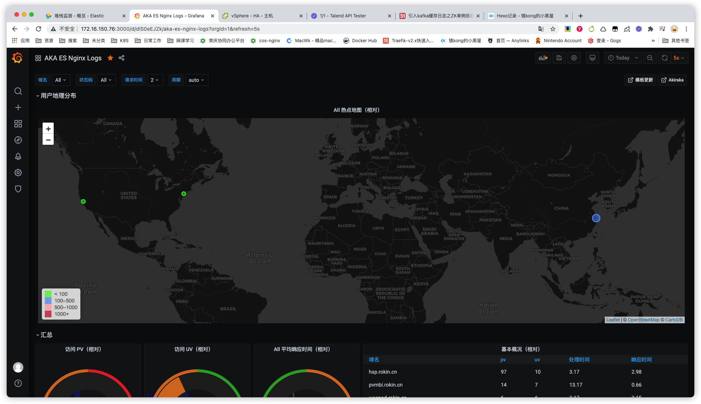
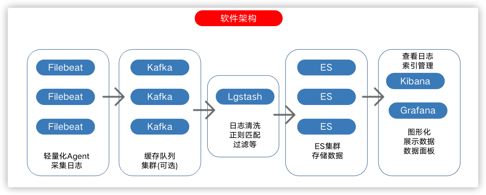

ELK-Grafana分析并展示nginx日志
效果图如下

整体架构如下(kafka可选)

软件包及版本
| filebeat-7.9.2-x86_64.rpm | |
|---|---|
| elasticsearch-7.9.2-x86_64.rpm | |
| logstash-7.9.2.rpm | |
| metricbeat-7.9.2-linux-x86_64.tar.gz | |
| grafana-7.3.6-1.x86_64.rpm |
全部使用 yum -y local install rpm包安装
主要配置文件
filebeat
1 | filebeat.inputs: |